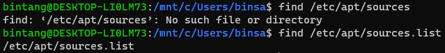

10 Command Bash Linux yang Sering Digunakan
ditulis oleh IPTEK FORKOM TRI 2021 pada 20 Mei 2021.

- pwd
- ls
- mkdir
- rm
- mv
- nano
- Sudo
- touch
- find 
- ssh-copy-id
Melihat pada direktori mana kita sedang bekerja.
Command 'ls' digunakan untuk melihat isi direktori yang saat ini sedang diakses, jika ingin melihat direktori lain maka command ls disusul dengan path direktori yang akan dilihat.
Perintah untuk membuat folder/direktori.
Perintah untuk menghapus file.
Perintah untuk memindahkan suatu file/direktori, bisa juga digunakan untuk mengubah nama file/direktori.
Command ini digunakan untuk menggunakan text editor nano, nano merupakan salah satu text editor bawaan yang sering digunakan untuk menyunting file konfigurasi linux.
Sudo merupakan singkatan dari “SuperUser Do” dan berfungsi untuk menjalankan task yang memerlukan hak akses (permission) administrative atau root.
Touch adalah perintah dasar Linux yang memperbolehkan Anda membuat file baru yang kosong melalui baris perintah Linux.
Find adalah perintah dasar Linux yang ditujukan untuk mencari suatu file dengan direktori tertentu. Umumnya digunakan untuk memeriksa apakah dalam suatu direktori terdapat file yang dicari atau tidak.
Menyalin SSH public key kita ke remote server untuk keperluan login SSH menggunakan metode public key.